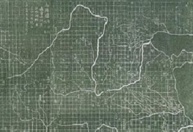
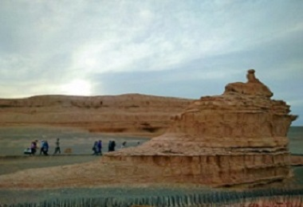
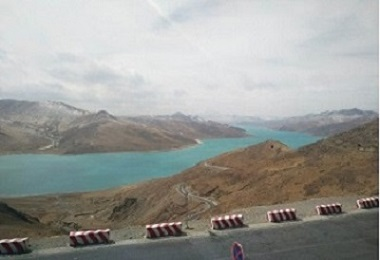
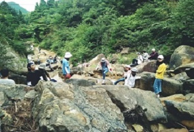

Ancient map calculates a mile in squares.
Representative of wind erosion landform.
First time to see snow mountain and holy lake.
Tired for 20000 steps per day but happy to learn.
Sui Graden ---'the most beautiful campus in the East'.